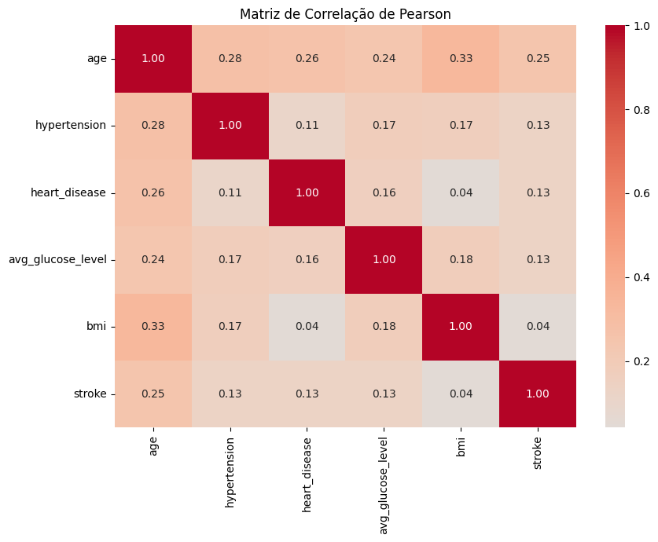
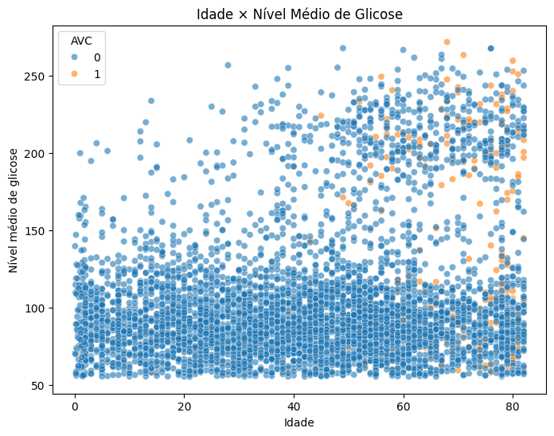
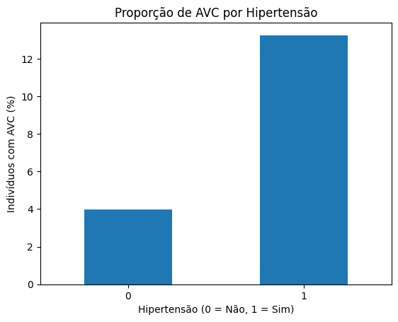
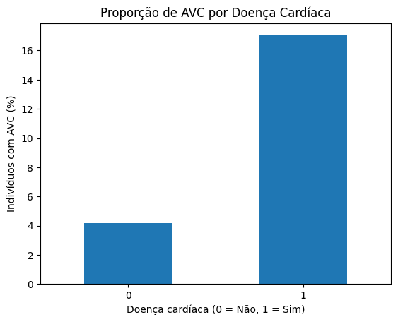
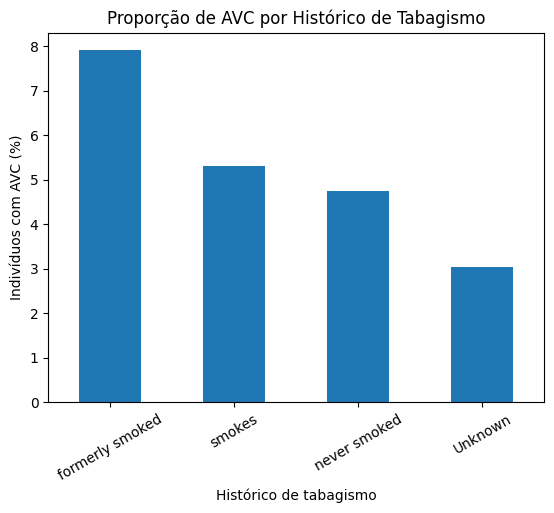
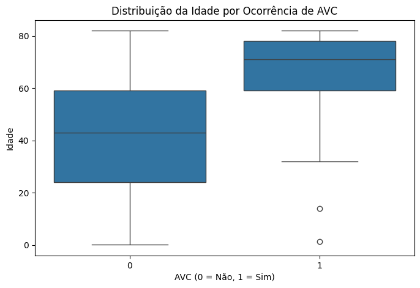
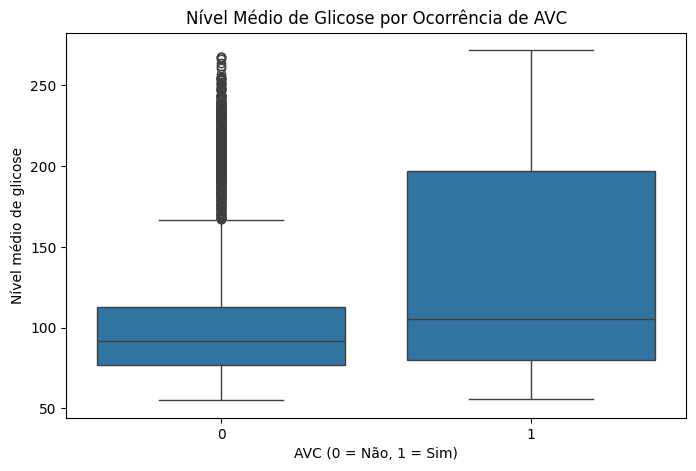

Análise Bivariada e Multivariada
Nesta etapa, são investigadas as relações entre diferentes variáveis do dataset, com atenção especial às associações com a variável alvo stroke.
1. Relações entre Variáveis Numéricas
Matriz de Correlação
Foi utilizada a correlação de Pearson para avaliar a associação linear entre as variáveis numéricas e binárias selecionadas.
A coluna id foi excluída por representar apenas um identificador individual.
correlacao = df[
[
"age",
"hypertension",
"heart_disease",
"avg_glucose_level",
"bmi",
"stroke"
]
].corr()
sns.heatmap(
correlacao,
annot=True,
fmt=".2f",
cmap="coolwarm",
center=0
)

De maneira geral, não foram observadas correlações lineares fortes entre as variáveis analisadas.
Em relação à variável alvo stroke, a maior correlação foi observada com age (0,25). hypertension, heart_disease e avg_glucose_level apresentaram correlações positivas de aproximadamente 0,13, enquanto bmi apresentou correlação próxima de zero (0,04).
Esses resultados indicam que nenhuma das variáveis analisadas apresenta, isoladamente, uma forte relação linear com a ocorrência de AVC. Entretanto, correlações baixas não significam necessariamente ausência de capacidade preditiva, pois podem existir relações não lineares e interações entre diferentes características.
Scatter Plot: Idade e Nível Médio de Glicose
Para complementar a matriz de correlação, foi utilizado um scatter plot relacionando age e avg_glucose_level, com a variável stroke representada pela cor dos pontos.
sns.scatterplot(
data=df,
x="age",
y="avg_glucose_level",
hue="stroke",
alpha=0.6
)

O gráfico não evidencia uma relação linear forte entre idade e nível médio de glicose, resultado consistente com a correlação relativamente baixa observada entre essas variáveis (0,24).
Os casos positivos de AVC aparecem com maior frequência nas faixas etárias mais elevadas. Entretanto, existe grande sobreposição entre indivíduos com e sem AVC, indicando que a combinação dessas duas variáveis, isoladamente, não proporciona uma separação clara entre as classes.
Também é possível observar uma concentração distinta de indivíduos com níveis mais elevados de glicose, comportamento já identificado anteriormente na análise univariada.
2. Relações entre Variáveis Categóricas e o Target
Como o dataset escolhido é o Stroke Prediction Dataset, a variável alvo utilizada nesta análise é stroke.
Hipertensão e Ocorrência de AVC
Para analisar a relação entre hipertensão e ocorrência de AVC, foi calculada a proporção de indivíduos com stroke = 1 dentro de cada grupo.
pd.crosstab(
df["hypertension"],
df["stroke"],
normalize="index"
) * 100
| Hipertensão | Sem AVC | Com AVC |
|---|---|---|
Não (0) |
96,03% | 3,97% |
Sim (1) |
86,75% | 13,25% |
taxa_hipertensao = (
df.groupby("hypertension")["stroke"].mean() * 100
)
taxa_hipertensao.plot(kind="bar")

Entre os indivíduos sem hipertensão, aproximadamente 3,97% tiveram AVC. Já entre os indivíduos com hipertensão, essa proporção foi de aproximadamente 13,25%.
Portanto, no conjunto de dados analisado, a proporção de AVC é mais de três vezes maior entre indivíduos com hipertensão. Esse resultado indica uma associação entre as variáveis, mas não permite estabelecer uma relação de causalidade.
Doença Cardíaca e Ocorrência de AVC
Também foi analisada a proporção de AVC entre indivíduos com e sem doença cardíaca.
pd.crosstab(
df["heart_disease"],
df["stroke"],
normalize="index"
) * 100
| Doença cardíaca | Sem AVC | Com AVC |
|---|---|---|
Não (0) |
95,82% | 4,18% |
Sim (1) |
82,97% | 17,03% |
taxa_doenca_cardiaca = (
df.groupby("heart_disease")["stroke"].mean() * 100
)
taxa_doenca_cardiaca.plot(kind="bar")

Entre os indivíduos sem doença cardíaca, aproximadamente 4,18% tiveram AVC. Entre os indivíduos com doença cardíaca, essa proporção foi de aproximadamente 17,03%.
Assim, no conjunto de dados analisado, a proporção observada de AVC é cerca de quatro vezes maior no grupo com doença cardíaca. O resultado evidencia uma associação entre as variáveis, mas não permite estabelecer uma relação causal.
Histórico de Tabagismo e Ocorrência de AVC
Foi analisada a proporção de indivíduos com AVC dentro de cada categoria de histórico de tabagismo.
pd.crosstab(
df["smoking_status"],
df["stroke"],
normalize="index"
) * 100
| Histórico de tabagismo | Sem AVC | Com AVC |
|---|---|---|
formerly smoked |
92,09% | 7,91% |
smokes |
94,68% | 5,32% |
never smoked |
95,24% | 4,76% |
Unknown |
96,96% | 3,04% |
taxa_tabagismo = (
df.groupby("smoking_status")["stroke"]
.mean()
.sort_values(ascending=False) * 100
)
taxa_tabagismo.plot(kind="bar")

A maior proporção de AVC foi observada entre indivíduos classificados como formerly smoked, com aproximadamente 7,91%. Em seguida aparecem smokes (5,32%), never smoked (4,76%) e Unknown (3,04%).
Essas diferenças indicam uma associação entre o histórico de tabagismo e a frequência de AVC no dataset. Entretanto, não é possível atribuir essas diferenças exclusivamente ao tabagismo, pois outras características dos indivíduos, como idade, podem estar associadas simultaneamente às duas variáveis.
Além disso, a categoria Unknown deve ser interpretada com cautela, pois representa indivíduos cujo histórico de tabagismo não é conhecido.
3. Relações entre Variáveis Numéricas e Categóricas
Para comparar variáveis quantitativas entre as duas categorias da variável stroke, foram utilizados boxplots.
Idade e Ocorrência de AVC
Como age apresentou a maior correlação com a variável alvo, sua distribuição foi comparada entre indivíduos com e sem ocorrência de AVC.
sns.boxplot(
data=df,
x="stroke",
y="age"
)

Observa-se uma diferença expressiva na distribuição da idade entre as duas classes. Os indivíduos que tiveram AVC (stroke = 1) apresentam idades consideravelmente mais elevadas, com mediana próxima de 70 anos, enquanto a mediana do grupo sem AVC está próxima de 43 anos.
Além disso, a maior parte dos indivíduos com registro de AVC está concentrada em faixas etárias mais altas. Esse resultado reforça a associação positiva observada anteriormente entre age e stroke.
Apesar dessa associação, o resultado é exploratório e não permite concluir que a idade, isoladamente, determine a ocorrência de AVC.
Nível de Glicose e Ocorrência de AVC
A distribuição de avg_glucose_level também foi comparada entre as classes da variável alvo.
sns.boxplot(
data=df,
x="stroke",
y="avg_glucose_level"
)

O grupo com ocorrência de AVC (stroke = 1) apresenta maior dispersão nos níveis médios de glicose e uma parcela considerável de observações em valores elevados.
Apesar dessa diferença, existe sobreposição entre as distribuições das duas classes. Portanto, o nível médio de glicose, quando analisado isoladamente, não permite uma separação clara entre indivíduos com e sem ocorrência de AVC.
O resultado é consistente com a correlação positiva, porém fraca, observada entre avg_glucose_level e stroke (0,13).